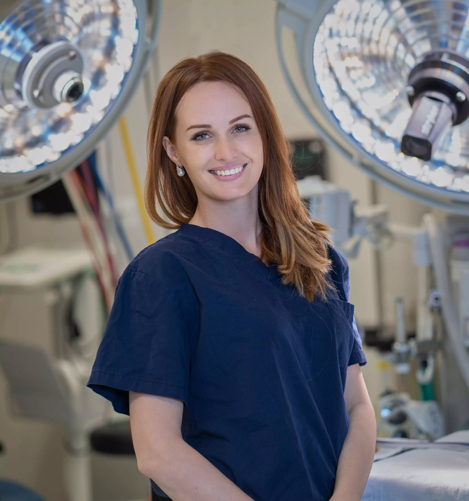
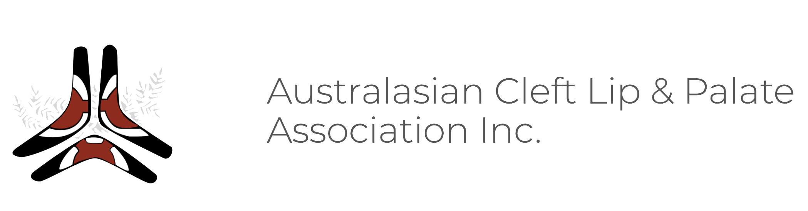

Diana Kennedy is a Specialist Plastic and Reconstructive Surgeon with extensive experience in both Adult and Paediatric Plastic Surgery. Dr Kennedy is a Fellow of the Royal Australasian College of Surgeons, a member of the Australian Society of Plastic Surgeons and the Australian Cleft Lip and Palate Association.
She cares for all patients with Plastic, Reconstructive and Aesthetic Surgical needs. She has special interests in women’s and children’s health and offers an empathic and warm approach to their care.
Dr Kennedy understands that achieving the best results comes from a collaboration between patient and surgeon. She maintains a warm, caring and approachable atmosphere in her practice and delivers personalised care from the first consultation, during surgery and throughout the recovery period.
She works at the Mater Private Hospital, Mater Private Children’s Hospital, Saint Andrew's War Memorial Hospital, Pacific Day Surgery and The Queensland Children’s Hospital.

procedures
Cosmetic
Breast augmentation
Breast implant removal
+/- Capsulectomy
Breast reduction
Breast lift
Abdominoplasty
Blepharoplasty
Otoplasty
(ear surgery)
Arm Reduction
Thigh Reduction
Reconstructive
Breast reduction
Breast reconstruction
Congenital breast deformities
Skin cancer surgery
Microsurgical Free Tissue Transfer
Paediatric
Craniosynostosis
Cleft lip
Cleft palate
Cleft rhinoplasty
Alveolar bone graft
VPI surgery
Secondary cleft surgery
Skin lesions: Congenital Naevus, dermoids, tumours
Otoplasty (prominent ear surgery)
